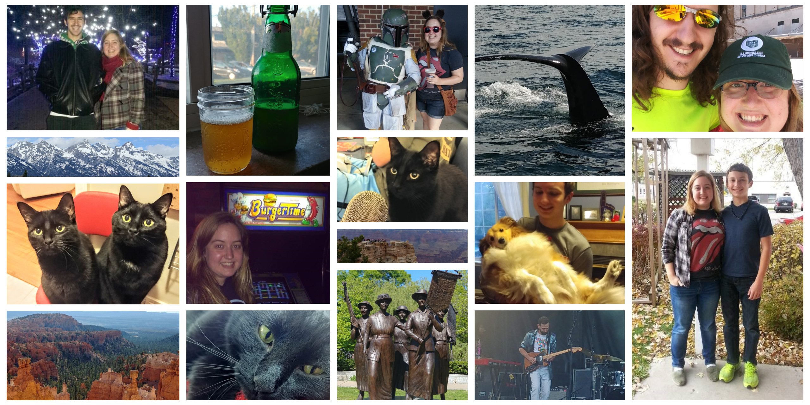
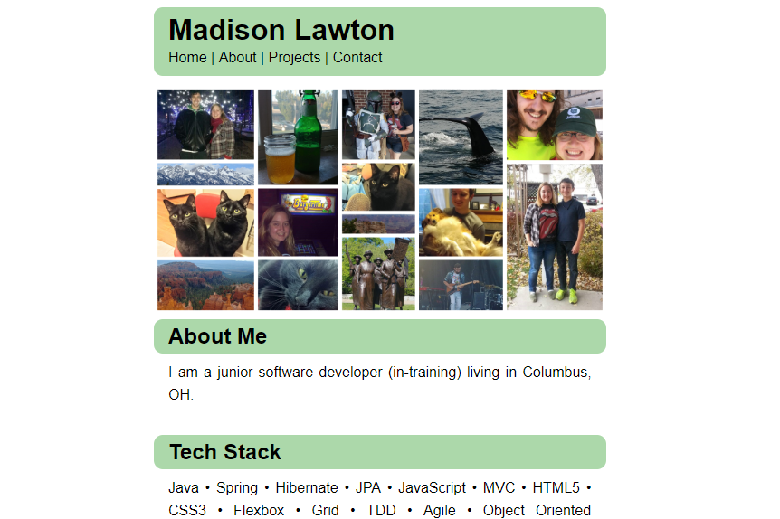
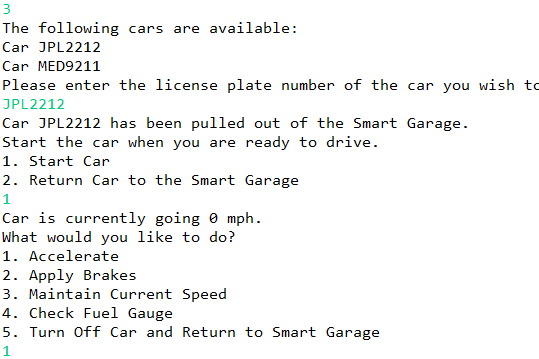

<!--comments-->
<!DOCTYPE html>
<html lang="en">

<head>
	<link rel="stylesheet" href="style.css">
	<link rel="icon" type="image/png" href="images/favicon.ico">
	<title>Madison Lawton</title>
</head>

</html>
<body>
	<div class="about-section">
	<header class="main-header">
		<h1 class="main-header__title">Madison Lawton</h1>
		<nav class="main-header__nav">
			<a class="main-header__nav__link" href="#home">Home</a> | 
			<a class="main-header__nav__link" href="#about-me">About</a> | 
			<a class="main-header__nav__link" href="#projects">Projects</a> | 
			<a class="main-header__nav__link" href="#contact-info">Contact</a>
		</nav>
	</header>
	<main>
		
		<section id="about-me" class="about-section">
			<h2 class="section-header">About Me</h2>
			<div class="text-container">
				<p>
					I am a junior software developer (in-training) living in Columbus, OH.
				</p>
			</div>
			<h2 class="section-header">Tech Stack</h2>
			<div class="text-container">
				<p>
					Java • Spring • Hibernate • JPA • JavaScript • MVC • HTML5 • CSS3 • Flexbox • Grid • TDD • Agile 
					• Object Oriented Programming • AJAX • JSON • Restful APIs • Responsive Design /
					Mobile • Structured Query Language • Relational Databases • Source Control / Git
				</p>
			</div>
		</section>
	</div>
		<!--about section container-->
		<section id="projects" class="projects">
			<h2 class="section-header">Projects</h2>
			<div class="projects--grid-layout">
				<article class="project-container">
					
					<h3 class="project-container__header">Portfolio Website</h3>
					<p class="project-container__summary">
						Week-long solo project to master the basics of HTML5 and CSS3. Filler - summary to come soon.
						Filler - summary to come soon. Filler - summary to come soon. Filler - summary to come soon.
						Filler - summary to come soon. Filler - summary to come soon. Filler - summary to come soon.
						Filler - summary to come soon. Filler - summary to come soon. Filler - summary to come soon.
					</p>
					<p class="project-container__footer">
						HTML5 | CSS3 | Flexbox | Grid |
						<a href="https://github.com/madlaw10/madlaw10.github.io" target="_blank">
							
						</a>
					</p>
				</article>
				<article class="project-container">
					
					<h3 class="project-container__header">Hospital Management</h3>
					<p class="project-container__summary">
						Solo project to showcase the skills mastered in the first four weeks of a
						coding bootcamp. There was a heavy emphasis on OOP and, by extension, APIE to
						design a mock hospital management system. When compared to my first solo
						project, Smart Garage, this code shows my growth and confidence as a developer
						in just a few weeks.
					</p>
					<p class="project-container__footer">
						Java | TDD | OOP & APIE | Git |
						<a href="https://github.com/madlaw10/high-street-hospital" target="_blank">
							
						</a>
					</p>
				</article>
				<article class="project-container">
					
					<h3 class="project-container__header">Virtual Pet Shelter</h3>
					<p class="project-container__summary">
						Used the principles of agile development to create a virtual pet shelter game
						with a team of fellow junior developers. The three-week long project was divided
						into multiple three-day sprints, with designated time for sprint retrospection
						and planning sessions. The team environment also required purposeful feature-branching
						and version control with GitHub.
					</p>
					<p class="project-container__footer">
						Agile | Git | Java | TDD | OOP |
						<a href="https://github.com/madlaw10/virtual-pet" target="_blank">
							
						</a>
					</p>
				</article>
				<article class="project-container">
					
					<h3 class="project-container__header">Smart Garage</h3>
					<p class="project-container__summary">
						First solo project utilizing basic object oriented programing skills.
						Used test driven development to build out multiple classes for various
						car types, provided each class with unique methods, and created a garage
						class to house all car objects. Wrote a console application to interact
						with the various classes, both individually and in groups.
					</p>
					<p class="project-container__footer">
						Java | TDD | OOP |
						<a href="https://github.com/madlaw10/smart-garage" target="_blank">
							
						</a>
					</p>
				</article>
			</div>
			<!--projects grid-->
		</section>
		<!--projects container-->
	</main>
	<footer id="contact-info" class="main-footer">
		<section class="contact-information">
			<p>madison.e.lawton@gmail.com</p>
			<p>1518 Kenny Road, Apt 8, Columbus, OH 43212</p>
		</section>
		<section class="professional-link">
			<a href="mailto:madison.e.lawton@gmail.com" target=_blank>
				
			</a>
			<a href="https://www.linkedin.com/in/madisonlawton/" target="_blank">
				
			</a>
			<a href="https://github.com/madlaw10" target="_blank">
				
			</a>
		</section>
	</footer>
</body>